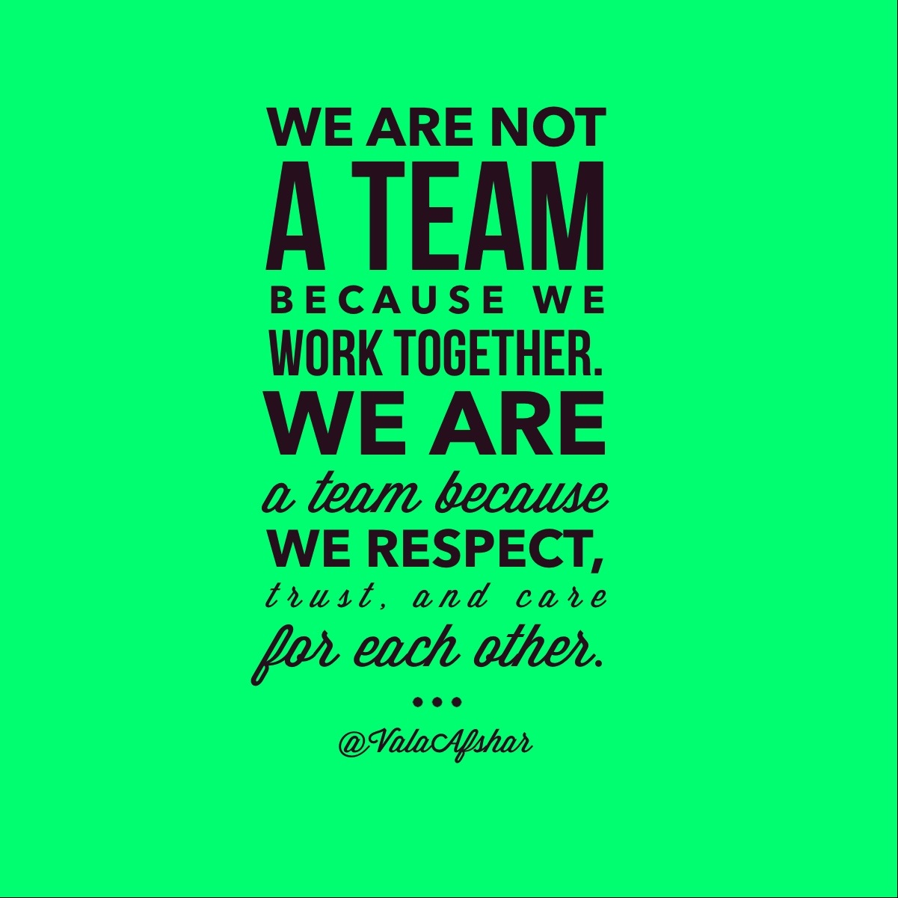
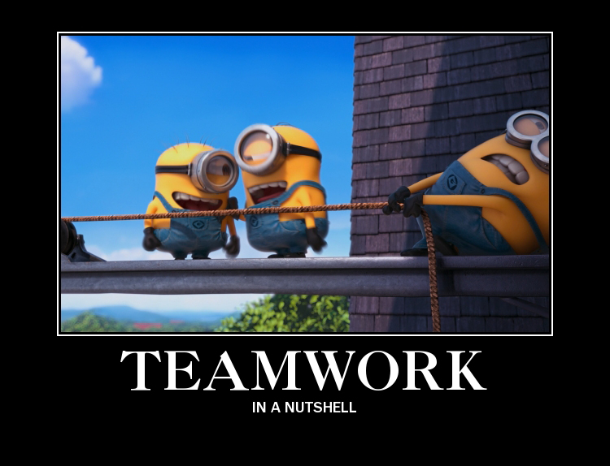

I believe that teamwork and leadership are connected and that one effects another. The way that I see those 2 words is there is no such thing as 1 leader and if 1 person in a team does the most work then it is not a team. In a team, there could be a team leader, but every person in the team brings an equal amount of participation into the group project and manages each other. Also, each person has a strength and a weakness, but in the group, what one person may lack another person should be strong in to make a stronger group.
 